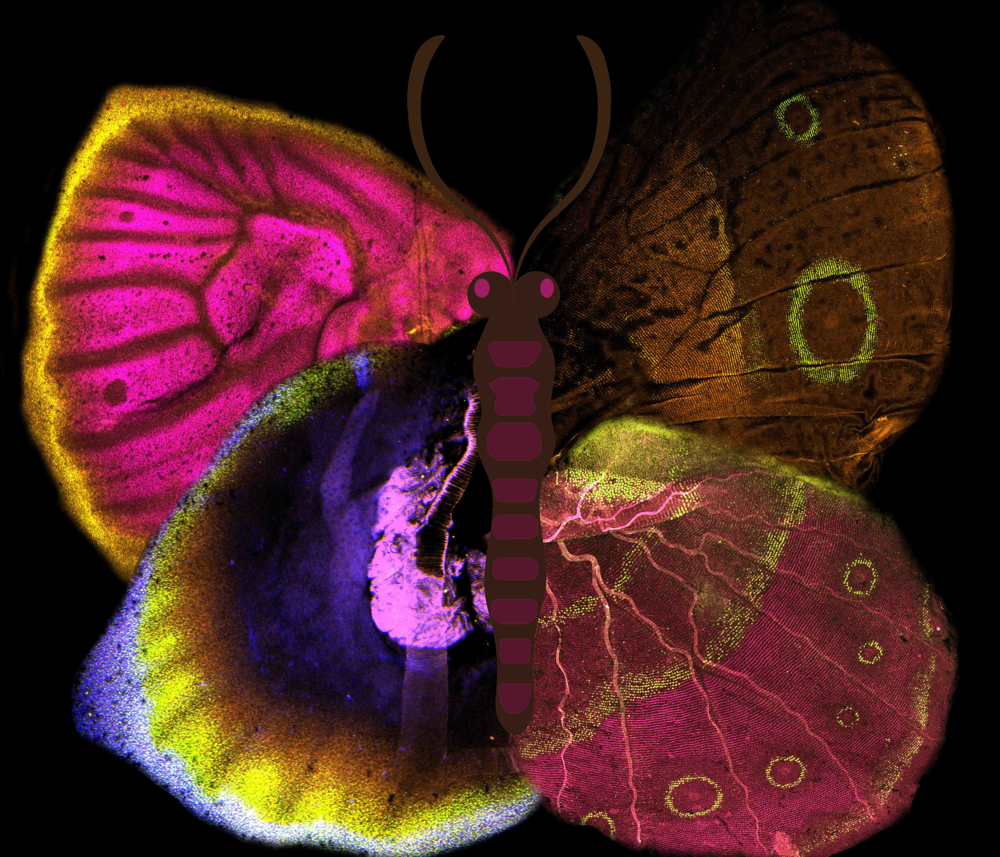
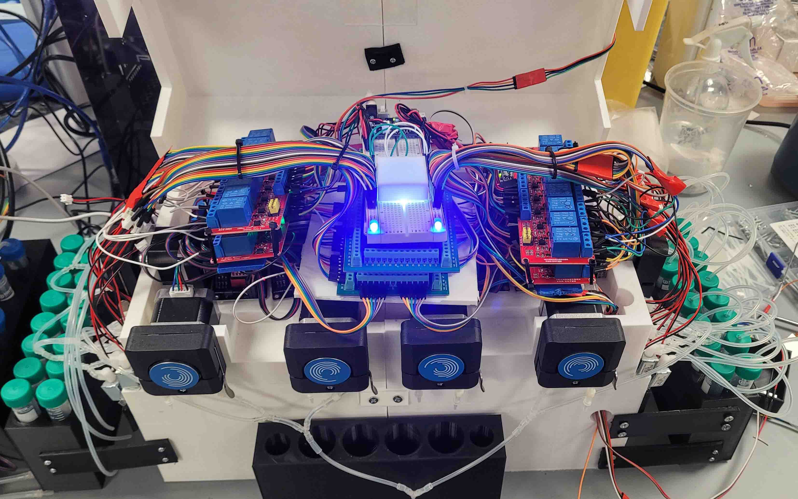
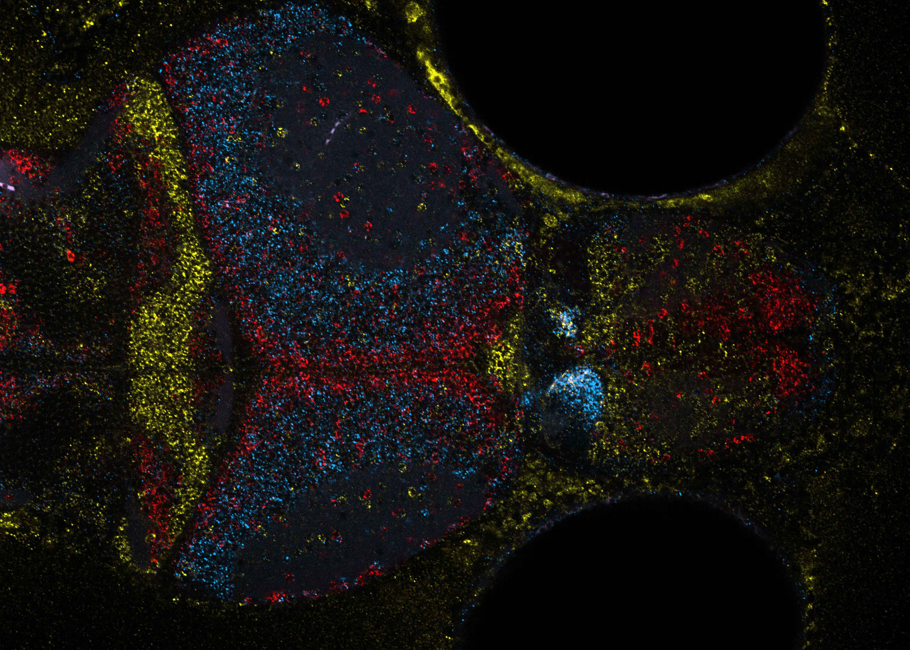

Developmental and Evolutionary Biology
I study how networks of genes change over evolution to make new body features, using the butterfly Bicyclus anynana to understand how biological patterns form.
By combining genetics, spatial biology and comparisons across species, my work shows how old, shared gene toolkits such as the Wnt, Dpp and Notch signaling pathways are reused in new ways during evolution. I often combine laser microdissection of specific wing regions, multiplexed gene detection, CRISPR knockouts, drug treatments and RNA sequencing to map how these genes are organized.

Artificial Intelligence, Robotics and Automated Biology
I build open-source lab machines that connect high-throughput biology with precise robotics. Using microcontrollers (Arduino, ESP32) and 3D printing, I make modular instruments such as the NanoPulse microinjector, the Multiplexer and RemBot for finding where genes are switched on in fixed tissue, and the FISHER automatic fish feeder for behavior experiments.
I also apply deep learning (PyTorch, TensorFlow, YOLO, ResNet) to farming and biology problems. The CORN-DRIVE system, for example, uses AI on small on-site computers to spot plant health problems in real time and adjust water and nutrients automatically.

Spatial Biology and Multiplex FISH
I am the lead developer of RAM-FISH (Rapid Amplified Multiplexed FISH), a high-resolution imaging method that maps gene expression across whole tissues. It is open source and low cost, to make spatial imaging available to more labs.
These methods let us see the mRNAs made in developing organs directly, linking genomics to the shape of tissues.

Neurobiology, Behavior and Mentoring
I study how animals learn and how specific genes in nerve cells change behavior. Tools like the FISHER system help link molecular mechanisms to behavior through neurobiology and genetics.
Central to all of this is a commitment to mentoring and open science. I have mentored more than a dozen undergraduates, along with master's and high school students, as they learn to work across biology, robotics and coding.